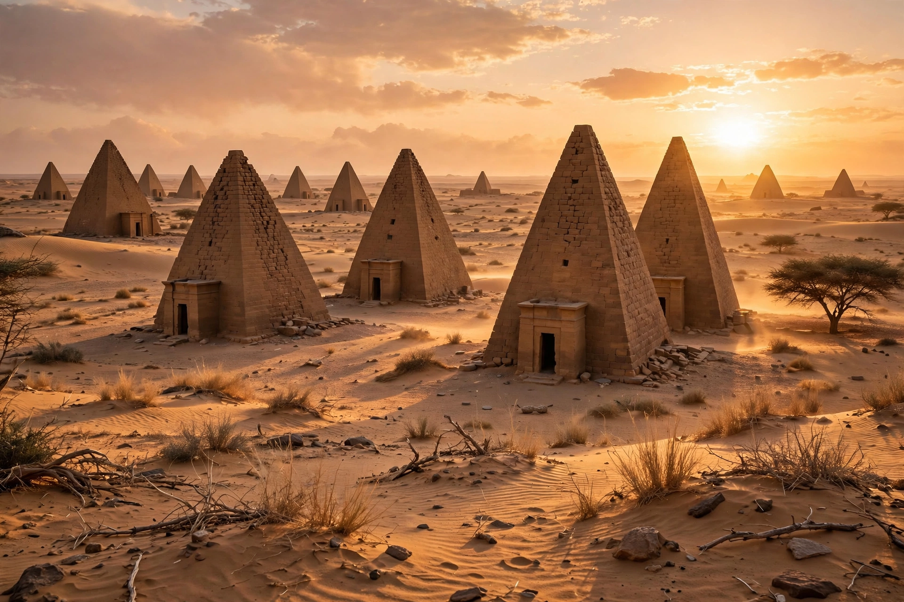

| Location | River Nile State, Sudan |
|---|---|
| Type | Ancient city |
| Period | Capital of the Kingdom of Kush, c. 800 BCE – c. 350 CE |
| Status | UNESCO World Heritage Site (2011) |
Meroë was an ancient city on the east bank of the Nile about 230 km northeast of Khartoum, Sudan, near Shendi. It was the southern capital of the Kingdom of Kush for several centuries and gave its name to the Meroitic period. The city is famous for its more than two hundred pyramids, built in the Nubian style — smaller and steeper than Egyptian pyramids — in three cemeteries near the city.

Kushite kings ruled Egypt as its Twenty-fifth Dynasty in the 8th–7th centuries BCE from Napata; after the Assyrian expulsion and a later move south, Meroë became the principal royal residence from around 590 BCE. The kingdom prospered on trade in gold, ivory, ebony and iron — Meroë was a major iron-smelting centre, sometimes called "the Birmingham of Africa". Meroë developed its own writing system, the Meroitic script, whose language remains imperfectly understood. The city clashed with Roman Egypt (a Roman expedition under Petronius sacked Napata in 23 BCE), and the kingdom declined in the 4th century CE, with Meroë falling to the rising kingdom of Aksum around 350 CE.
The site includes the royal city with palaces and temples (including temples of Amun and Apedemak), reservoirs (hafirs), and the pyramid fields of Begrawiya. The treasure hunter Giuseppe Ferlini notoriously demolished several pyramid tops in the 1830s searching for gold. In 2011 Meroë was inscribed as a UNESCO World Heritage Site together with Naqa and Musawwarat es-Sufra as the "Island of Meroe".